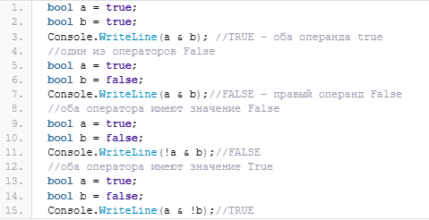
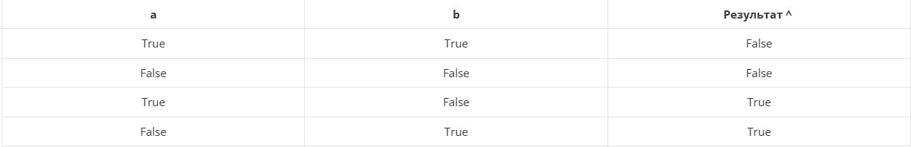
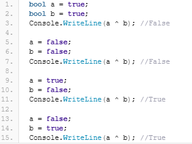
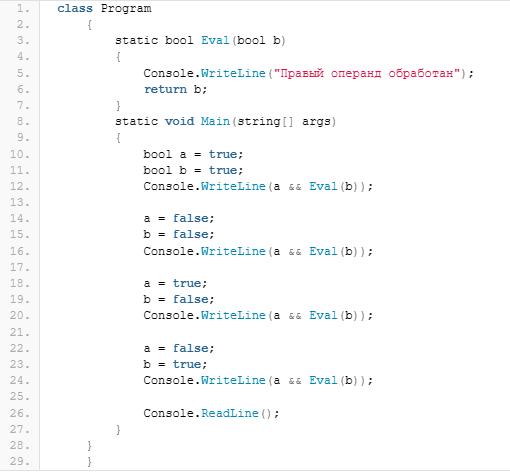
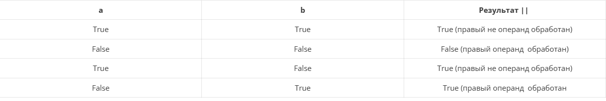
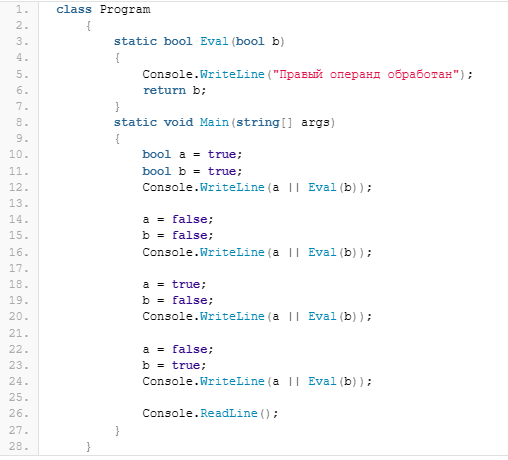

Содержание
Логические операторы предназначены для выстраивания логики программы, например, определить какое действие должны выполнить программа в результате получение какого-либо значения выражения. В C# логические операторы, как и арифметические могут быть унарными и бинарными.Унарные:
Для дальнейшего рассмотрения темы логических операторов в C# стоит затронуть вопрос о таком условном операторе, как if. В C# этот операторы выглядит следующим образом:
if (условие)
(действие 1);
else
(действие 2);
Здесь, в отличие от Delphi, можно увидеть, что: во-первых, в C# нет then перед первым условием и, во-вторых, после первого действия обязательно ставиться точка с запятой, чего в Delphi делать не надо. В остальном же, действие оператора точно такое же как и в Delphi и любых других языках программирования — если выполняется условие, то программы переходит на действие 1, иначе — на действие 2.
Теперь перейдем к логическим операторам в C#.
Унарный префиксный оператор ! выполняет логическое отрицание операнда, то есть, возвращает true, если операнд имеет значение false, и, наоборот, false, если операнд имеет значение true. Например,
bool b = true;
Console.WriteLine(!b);
вернет нам в консоль строку
False
Это оператор всегда обрабатывает оба операнда и возвращает True только в том случае, если оба оператора равны True. Например,

Так же, как и предыдущий оператор, логическое ИЛИ обрабатывает оба операнда. В отличие от логического И этот оператор вернет True, если хотя бы один операнд будет иметь значение True.
bool a = true;
bool b = false;
Console.WriteLine(a | b); //TRUE
Вычисляет оба операнда, но возвращает True только в том случае, если левый и правы операторы не равны, то есть результат применения этого оператора можно представить следующим образом:

Ниже представлен код, демонстрирующий данные из таблицы:

В отличие от предыдущих бинарных логических операторов C# этот оператор обрабатывает правый операнд только тогда, когда это необходимо. Действие этого оператора следующее — он возвращает True только тогда, когда оба оператора равны True.
Код, демонстрирующий работу оператора представлен ниже

Также, как и предыдущий оператор, условное логическое ИЛИ обрабатывает правый оператор только когда необходимо. При этом результат выполнения условного логического ИЛИ будет True, если хотя бы один из операндов равен True.

Код, демонстрирующий поведение уловного логического ИЛИ представлен ниже:

Операнды встроенных типов значений равны, если равны их значения. Например,
bool a = true;
bool b = false;
Console.WriteLine(a == b); //False
int intA = 1 + 2 + 3;
int intB = 6;
Console.WriteLine(intA == intB); //True
Применительно к перечислениям, оператор == вернет true, если если равны соответствующие значения базового целочисленного типа. Например,
enum Color { Red, Gerren, Blue };
enum Sex { Male, Female, Unknown };
static void Main(string[] args)
{
Color a = Color.Red;
Sex b = Sex.Male;
Console.WriteLine((int)a == (int)b); //True
}
Два операнда string равны, если они оба имеют значение null или оба экземпляра строки имеют одинаковую длину и идентичные символы в каждой позиции символа.
string a= "Hello world";
string b = "HeLLo World";
Console.WriteLine(a == b); //False
Console.WriteLine(a.ToLower() == b.ToLower());//True
Оператор вернет true, если операнды не равны между собой. Действие оператора аналогично оператору равенства.
Эти операторы поддерживаются всеми целочисленными типами и типами с плавающей запятой.
Сегодня мы познакомились с логическими операторами в C#, а также рассмотрели некоторые особенности использования этих операторов. На данный момент мы знаем, что такое переменная, как объявлять и инициализировать переменные, какие типы данных есть в C#, а также какие арифметические и логические операторы мы можем применять в своих приложения на C#. Теперь можно приступать к более детальному рассмотрению типов данных в C#.